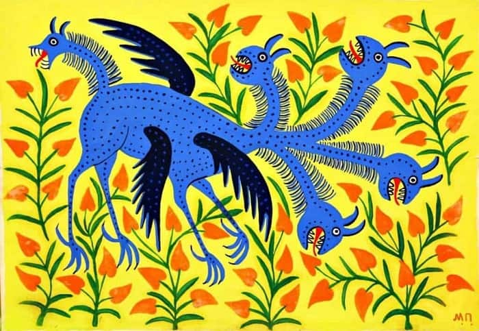

“Maria Prymachenko is not only the symbol of Ivankiv… and not only the symbol of Ukraine, but a symbol of the whole world today.”
Maria Prymachenko was born to a peasant family on 12 January 1909 in the village of Bolotnya, in the Ivankiv district, Kyiv province of Ukraine. From her family, she learned various traditional Ukrainian crafts including embroidery. She attended school for four years, but contracted polio, which left her with a physical impairment that would affect her life and art forever. From an early age, suffering from polio instilled in Prymachenko a great sense of empathy for the suffering of others, and her caring for all living creatures was to become an important element in her art. This turn towards art came already as a young girl. Prymachenko once put her first artistic experience into words as follows:
“Once, as a young girl, I was tending a gaggle of geese. When I got with them to a sandy beach, on the bank of the river, after crossing a field dotted with wild flowers, I began to draw real and imaginary flowers with a stick on the sand… Later, I decided to paint the walls of my house using natural pigments. After that I’ve never stopped drawing and painting.” Maria Prymachenko
In 1934, the Central Experimental Workshops opened at the Kyiv Museum of Ukrainian Art and started collecting talented folk artists. Prymachenko was invited to join in 1936, discovered by Tatiana Flora, a master weaver and embroiderer from Kyiv. During this time, Prymachenko painted, embroidered, and did ceramics work. In 1936, her art was exhibited in an entire hall at the First Republican Exhibition of Folk Art. The success of the exhibition led to a string of successful exhibitions in Paris, Warsaw, Sofia, Montreal, and Prague. She was awarded a golden medal at the 1937 Paris World Fair, and when Picasso saw her works he said: “I bow down before the artistic miracle of this brilliant Ukrainian.” In 1970, Prymachenko was awarded the title of People’s Artist of Ukraine.
Prymachenko’s paintings are referred to as “naïve art”, a term used to describe the work of artists who did not receive formal art training and who are completely self-taught, without having many references to the history of art. She found her sources and themes in the decorative wall paintings that were prominent features in Ukraine, in lullabies, folk legends, and fairy tales, and in the nature that surrounded her. Prymachenko loved color and imbued her paintings with rhythmic shapes and colors creating a sensitive and passionate ode to life while interweaving it with the folk art influences that she grew up with. She drew the lines in her artworks with pencil and then painted with gouache and watercolor.
Having lived through many difficult times and having lost the father of her child in WWII, Prymachenko dedicated her art to exploring the struggle between good and evil. She often depicted this through various creatures, some of which were fantastical creatures she made up herself. Most of her works are permeated with this struggle between good and evil, where good always wins.
Prymachenko’s art is one of the most powerful and pure forms of anti-war art, akin to that of the Norwegian textile artist Hannah Ryggen whose tapestries contained radical political messages against fascism, nazism, and atrocities of war. In Prymachenko’s art, many of the titles underline the visual anti-war and pacifist messages. In one of her paintings, which has become a strong symbol against the current war in Ukraine and the destruction and violence perpetrated by Russian forces, a white dove spreads its wings against a yellow background filled with flowers. The title is: A dove has spread her wings and asks for peace (1982). Calling for an end to the war waged on Ukraine, this image was recently recreated as a street mural in St. Louis, Missouri and in San Francisco, accompanied by the text “Stop the war on Ukraine”, and projected onto the side of a building in Oakland, California.
Other Maria Prymachenko artworks that bear this strong message of peace include Flowers for peace (1965), May that nuclear war be cursed! (1978), and May I give this Ukrainian bread to all people in this big wide world (1982). Maria Prymachenko died in 1997 in the village where she was born, Bolotnya. Her artworks continue to carry the very heart and spirit of Ukraine to this day and call out for an end to the violence destroying ordinary people’s lives. Note: the Prymachenko Family Foundation has partnered with Rug Your Life to create children’s rugs with artworks by Maria Prymachenko. Each rug is made to order, and 100% of the proceeds are donated to support Ukraine.
On 28 February 2022, Russian forces burned down the Ivankiv Historical and Local History Museum, located in the Ukrainian village of Ivankiv, northwest of Kyiv. The museum housed approximately 25 paintings by Ukrainian folk artist Maria Prymachenko (1909-1997), and the paintings were all thought to have been destroyed in the fire. However, recent reports suggest that some of her works may have been saved by a local resident. In the meantime, Maria Prymachenko’s art has become an example of Protest Art and is being spread as a message of peace and resistance all over the world.